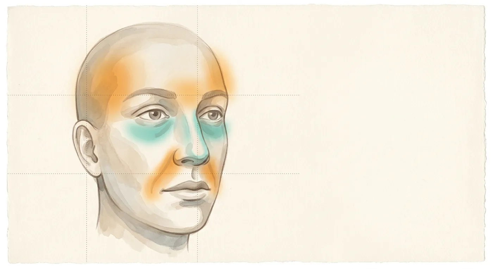

FRONTIER WATCH 02 / 前沿观察
一张自拍，能读出两只不同的“健康时钟”。
一句话：哈佛 Mass General Brigham 团队用 4000 多万张人脸照片训练了一个人脸“基础模型” FAHR-Face，再分别微调成两个工具：一个估算“看上去的生物年龄”，一个直接预测癌症患者的死亡风险。两者在 4.3 万名放疗患者中都和生存显著相关，而且看的是脸上不同的地方。
先看作者的视频
作者：Fridolin Haugg（哈佛医学院博士生，论文共同第一作者）。在 LinkedIn 打开原帖 ↗
它在问一个很老的问题
医生向来会“看脸色”。约公元前 400 年，希波克拉底在《预后》里描述过濒死面容：鼻尖锐、眼窝凹陷、颞部塌陷，后世叫它 Hippocratic facies。肿瘤科医生决定是否给老年患者上高强度放化疗时，也会参考“这个人看起来扛不扛得住”。问题在于，这种判断主观、难以复现、没法量化。这项研究想做的，就是把这道“看一眼”变成一个可测量的数字。
同一团队 2025 年在同一期刊发表过 FaceAge 模型，主要基于 60 岁以上、以白人为主的人群。这次的 FAHR-Face 是升级版：换成“基础模型”路线，覆盖全年龄段，并新增一个直接预测生存的模型。
它是怎么做的
打个比方：先让一个实习生看 4000 万张脸，不告诉他任何病情，只练“认脸”的基本功；然后才拿几万份带随访结果的病历，教他两门专科：“猜年龄”和“猜预后”。基本功扎实，专科就不需要海量病历也能学好，这正是“基础模型”的意义。
术语：面龄偏差（FAD）= 模型估的年龄 − 实际年龄，正数代表“看起来比实际老”。aHR = 校正年龄、性别、种族、癌种、治疗意图、治疗年份和放疗技术后的风险比。
关键数字
90 天内死亡比例：生存分最高 vs 最低（哈佛测试集）
64/122 人 vs 20/975 人。对照：面龄偏差 >20 岁的人 90 天死亡 21.3%（226/1060），≤ −10 岁的人 6.4%（270/4195）。
风险比一览（圆点为 aHR，横线为 95% 置信区间，竖线为 1）
橙色为面龄偏差，青色为生存模型。数字全部来自论文表 1、表 2 和图 4。
- 面龄偏差 ≥5 岁的患者，在 28 种诊断里有 18 种生存显著更差，其余方向一致但未达显著。
- 吸烟和面龄偏差关系最强，呈剂量依赖：现吸 > 已戒 > 从不吸。重度饮酒、药物滥用也让人“显老”。
- 化妆、拍摄角度、光照、表情对面龄估计无统计学差异；做过鼻整形的人平均“老” 1.11 岁。
- 按癌种看生存模型 C 指数，从霍奇金淋巴瘤的 0.53 到 HPV 阳性口咽癌的 0.88，差别很大。
最有意思的发现：脸上有两只时钟
⏳ 衰老时钟 · 面龄模型
主要看鼻唇沟、额头、颞部，40 岁以后越来越看重颞部和额头。反映的是慢慢累积的老化。
⚠️ 风险时钟 · 生存模型
主要看眼下和鼻梁，各年龄段都一样。和希波克拉底说的“眼窝凹陷、鼻尖锐”位置重合，更像近期的消耗和衰竭。
两个模型共用一个底座，却几乎不重叠：两者分数的相关系数只有 0.22（哈佛）和 0.16（荷兰），特征空间的余弦相似度接近 0。放进同一个 Cox 模型后，两者都仍然独立预测生存，合在一起拟合更好（AIC 26560，低于单用面龄的 26602 和单用生存模型的 26563）。
对临床的启发：“看起来老”和“看起来病”是两回事。前者以年为单位，适合追踪；后者更适合判断近期风险。
冷静看：证据还差什么
| 问题 | 具体情况 |
|---|---|
| 研究类型 | 回顾性模型开发与验证，不是前瞻性试验。证明的是“相关、能分层”，没证明“用了能让病人获益”。 |
| 人群单一 | 全是放疗患者，来自美国和荷兰的高收入国家中心；哈佛测试集 85.2% 是白人，亚洲人只占 3.0%。 |
| 没跟医生比 | 英国萨里大学 Bober 教授指出：研究没有测量医生自己对体能、一般状况的判断，所以不知道它比医生“看一眼”多给了什么。 |
| 相对排序，不是个人概率 | 模型能把人群按风险排序，但分数没有被校准成“这个人还能活多久”，不能直接用于个体决策。 |
| 亚组不稳 | 校正后，面龄偏差在黑人患者中与生存的关联不显著（生存模型仍显著）；不同癌种的表现差异很大。 |
| 拍照条件 | 论文报告化妆、角度、光照影响不显著，但专家点评认为微笑或光线平均会让估计偏差约 2 岁，个别更多；“用它追踪衰老或生活方式改变”尚未验证。 |
| 数据与伦理 | 预训练数据来自网络人脸库；临床照片经伦理委员会批准豁免知情同意。医院已就该类算法申请美国临时专利。代码在 GitHub 开源，临床数据不公开。 |
对我们医生意味着什么
在放疗患者中，一张普通照片可以给出独立于年龄、癌种和治疗方案的预后信息，适合在缺少其他评估工具时辅助分层。
老年创伤与急诊：衰弱评估（握力、起立行走试验）在急诊很难做，一张照片能否补位？论文没在急诊人群里测试，需要专门验证。
颞部与肌肉：面龄模型越到高龄越看重颞部，而颞部凹陷常被视为颞肌和脂肪流失的体征。它和全身肌少症有没有关系？这是值得做的研究问题，目前没有证据。
人脸属于敏感个人信息（我国《个人信息保护法》把生物识别信息列为敏感信息）。任何院内应用都要先过伦理和数据合规，不能拿病人照片随手上传给 AI。
课堂练习：用五个问题读一篇“预测模型”论文
来源
原始来源：Haugg F, Lee G, et al. Foundation artificial intelligence models for health recognition by use of face photographs (FAHR-Face): a model development and validation study. Lancet Digit Health 2026; 101056. DOI ↗（开放获取，CC BY-NC-ND 4.0）· 英国科学媒体中心专家点评 ↗ · 开源代码 ↗。本页是 aiai 学院的中文解读，数字以原文为准；“我的设想”部分属个人观点，不构成医疗建议。